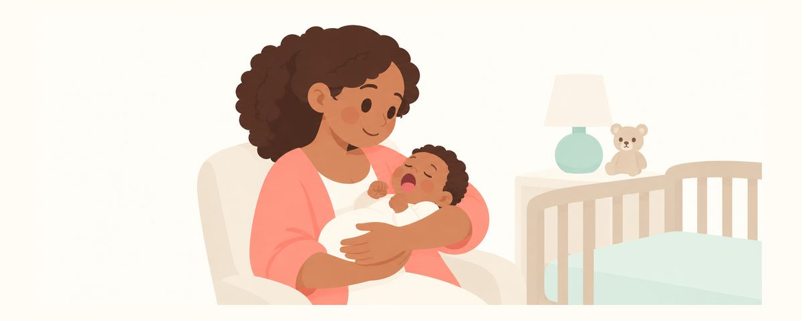

新生兒嘴巴裡的白色顆粒和白斑：艾氏珠與鵝口瘡怎麼分
新生兒上顎或牙齦上像米粒的小白點，大多是小囊腫，會自己消失。整理可以放著不管的白色顆粒，和擦不太掉的白色薄膜「鵝口瘡」怎麼分辨，以及什麼時候該看小兒科。
重點一覽
- 白色顆粒是小囊腫，會自己消失
- 不要擠或弄破，讓它去就好
- 擦不掉的白色薄膜可能是鵝口瘡
看寶寶嘴巴時發現白點或白色薄膜，很容易嚇一跳。是要長牙了，還是生病了？這篇整理新生兒嘴裡常見的白色顆粒，以及可能需要就醫的白色薄膜要怎麼分辨。
像米粒的小白點，其實很常見
很多新生兒的上顎中間或牙齦上，會有像米粒般的小白點。這是形成口腔時留下來的組織，變成了小小的囊袋，這種囊袋叫做囊腫。
依出現的位置，名稱也不同。
- 艾氏珠（Epstein pearls）：沿著上顎正中間的線出現。
- 包氏結節（Bohn's nodules）：出現在上顎後方或牙齦內外側。
- 齒板囊腫：出現在牙齦頂端。
名稱不同，爸媽要做的事都一樣。這三種都不會痛，也不需要治療。通常在出生後幾週到幾個月內，會自己破掉或消失。長在牙齦頂端時看起來很像在長牙，但它們不是牙齒。
還有一種容易搞混的，是蓋在舌頭或臉頰內側的白色薄膜。大多是餵奶後留下的奶垢，但有時是一種黴菌在嘴裡大量增生的鵝口瘡。鵝口瘡像茅屋起司一樣白白地覆蓋著，特點是不容易擦掉。
白色顆粒放著就好，白色薄膜輕輕擦擦看
如果發現白色顆粒
- 不要擠、刮或把它弄破，放著就好。碰它反而可能造成傷口而疼痛。
- 拍張照片，每隔幾天比較一下大小有沒有變化。
- 和平常一樣，餵奶後用濕紗布輕輕擦拭牙齦。
如果看到白色薄膜
- 把乾淨的紗布沾水纏在手指上，輕輕擦擦看。
- 很容易擦掉的話，大多是奶垢。
- 擦不太掉，或擦過的地方發紅、流血，就要懷疑是鵝口瘡。這時請停下來，不要再搓了。
- 也留意寶寶是不是不太肯喝奶，或同時有一直好不了的尿布疹。這些可能和鵝口瘡一起出現。
懷疑是鵝口瘡時，在家也有能做的照顧。奶瓶奶嘴和安撫奶嘴每次用完都要清洗消毒。如果是親餵，也請留意媽媽的乳頭有沒有疼痛或裂傷。因為媽媽和寶寶之間會互相傳染，常常需要一起治療。
爸媽常犯的錯，是先塗藥局買的藥試試看。鵝口瘡的藥能不能用，要看寶寶的月齡。請不要自行塗藥局買的產品，先到小兒科確認。
常見問題
白色顆粒是要長牙的徵兆嗎？
不是。這是形成口腔時留下的組織變成的小囊袋，和牙齒沒有關係。通常在出生後幾週到幾個月內會自己消失。
白色顆粒好幾週都還在，沒關係嗎？
消失的時間每個寶寶都不一樣，有時要好幾個月。只要不會痛、大小沒有變，觀察就可以了。如果越變越大，請帶去檢查。
舌頭白白的，分不出是奶垢還是鵝口瘡。
用乾淨的濕紗布輕輕擦擦看。很容易擦掉的話大多是奶垢；擦不太掉或擦過的地方發紅，就可能是鵝口瘡。分不清楚時，到小兒科檢查最準確。
如果是鵝口瘡，媽媽也要治療嗎？
如果是親餵，媽媽和寶寶常常需要一起治療。媽媽的乳頭如果疼痛或裂傷，看診時也請一併告訴醫師。
出現這些情況請看小兒科或牙醫
- 懷疑是鵝口瘡，而且寶寶未滿4個月時
- 有白色薄膜，同時拒喝奶，或過了1週仍沒有好轉時
- 有白色薄膜，同時有一直好不了的尿布疹時
- 白色顆粒越變越大時
- 牙齦上的腫塊妨礙餵奶時
- 寶寶一出生就有牙齒時
在對的時候收到提醒
在牙齒日曆 App 中輸入孩子的出生日期（或預產期），這些文章就會在需要的時候以提醒的方式送達。免費使用，無須註冊。
參考資料
- AAPD · Perinatal and Infant Oral Health Care (2025)
- StatPearls · Palatal and Gingival Cysts of the Newborn (2025)
- NHS · Oral thrush (adults and babies) (2026)
本App中的資訊僅供一般衛教參考，無法取代專業牙科診療。關於孩子的狀況，請諮詢牙醫師。